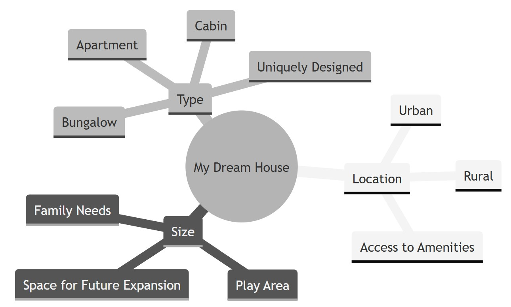
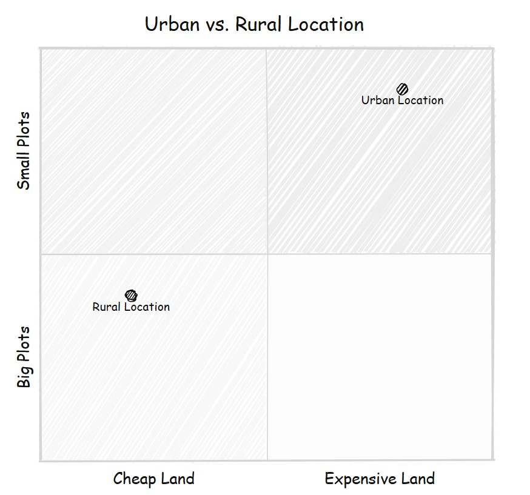
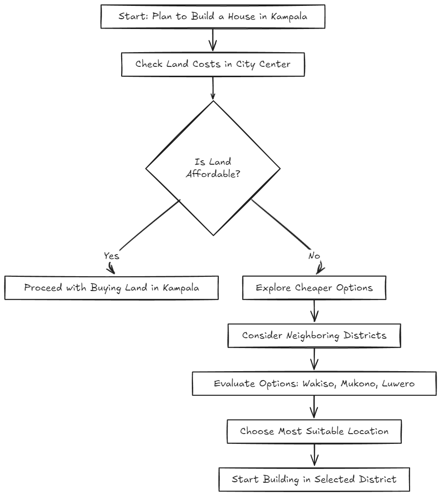
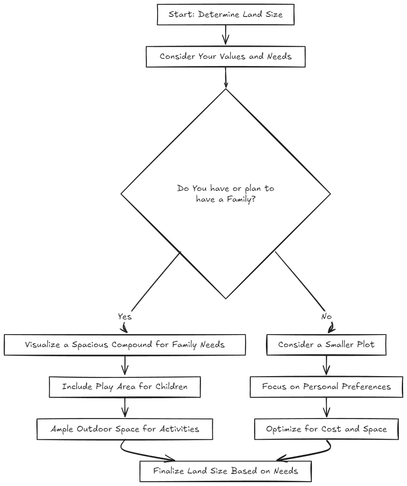
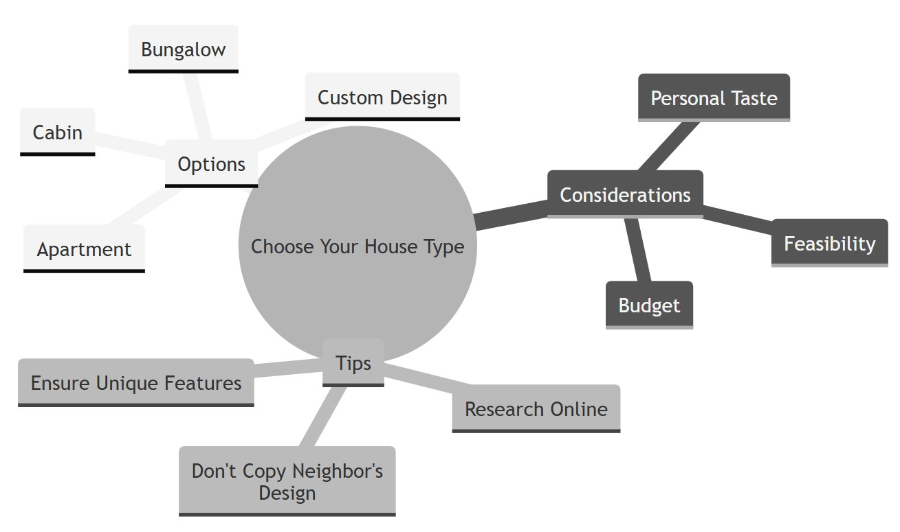

Everything in life starts as an idea in your mind, and your house is no different.
You must imagine, in as much detail as you can, where you want to build and how you want your house to look like before you lay a single brick.
The challenge with imagination is that sometimes we do not know the limits or boundaries for our imaginings. Also, sometimes we dream up ideas that are not feasible for our context and pockets.
In this first chapter, I provide a practical list of things to consider as you begin to nurture that germ of an idea, that is your ideal house.

In order of priority, there are 3 main considerations as you imagine your ideal house:
Location
Size
Type
Location, Location, Location
It is more practical to try and visualize a location first before one imagines the house, because our grand imagination for the building - may not fit the plot of land it will sit on.
For instance, depending on whether you plan to build in a rural or urban area will play a big role in how big the available land size you require to place your dream house. In addition, the price of land in these different locations (rural vs urban) is also a key factor in determining how much you will have left to spend on the actual building.

I’ve known my friend Vincent for many years – he is an ambitious, but practical man. Over the years, Vincent has built three houses for both residential and commercial use.
When he was starting out, he had dreams of building his first house in Kampala, the capital city, but he later had to reconsider this, when he realized how much more expensive land was, as you get closer to the city center. He ended up having to explore cheaper options outside the city, in neighboring districts of Wakiso, Mukono and Luwero.

The location you choose will also impact the prices of common building materials e.g. sand, stones, timber etc… so keep that in mind. In addition, the distance your site is from the main road or key amenities or utilities should also be considered.
Land size matters
Once you have completed imagining the location for your house, the next step is to visualize the size. How much space you think you will need is key and depends on your individual values and needs.
Vincent, being a father of three young children, envisioned a spacious compound where his kids could play freely and safely. He knew that having ample outdoor space would be essential for his growing family. On the other hand, a single person with no plans to start a family would likely choose to build on a smaller sized plot, just enough to suit his or her personal preferences.

So many types
After you have a better sense of the location and size of your plot, now is the time to dream about the building itself. There are so many different types of houses out there, and a simple Google search can reveal to you all of the many options and configurations you have at your disposal e.g. cabin, bungalow, apartments etc …
The decision on which type of house largely depends on the individual’s own tastes and budget, which will vary from person to person. Hence as you visualize your own house make sure it is unique to you and I do not recommend you just copy and paste your neighbor’s vision, however tantalizing it may be.

Practical Tips – Chapter 1:
Create a notebook (hard or soft copy) to write and store all your thoughts about your dream house detailing the ideal location, size and type you want
Visit the proposed location, where you plan to build, to get familiar with the surroundings and environment of your future house. More often than not, the type of home you build will be dictated by the geography or typography – so get familiar with it.
By taking the time to exercise your imagination you’ll get those creative juices flowing. Building a house is an art form, before it is a science.
References/Sources/Citations:
Zsviczian, Z., 2025. Obsidian Excalidraw Plugin. Available at: https://github.com/zsviczian/obsidian-excalidraw-plugin [Accessed 18 Jan. 2025]
Mermaid.js, 2025. Mermaid.js Documentation. Available at: https://mermaid-js.github.io/ [Accessed 18 Jan. 2025].
RStudio, 2025. RStudio Integrated Development Environment for R. Posit Software, PBC. Available at: https://posit.co/products/open-source/rstudio/ [Accessed 18 Jan. 2025]
Quarto, 2025. Quarto: Open-source Scientific and Technical Publishing. Available at: https://quarto.org/ [Accessed 18 Jan. 2025]